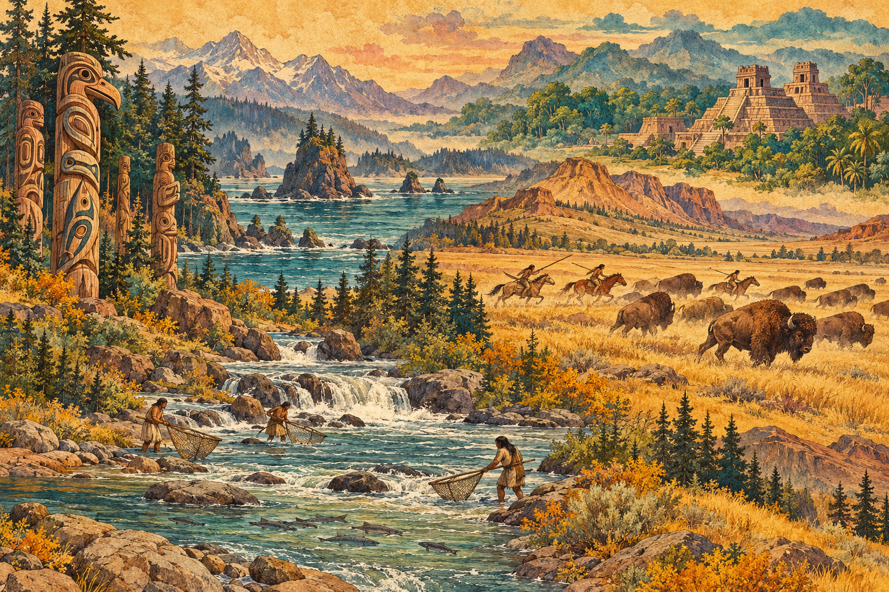

966 entries · 29 collections · 31 expanded profiles · 28 brief cited overviews · 509 source guides · 1994 unique resources
Our purpose is to provide a research directory for students, teachers, and anyone curious about Indigenous peoples and the history of North America. We organize carefully selected sources, cited introductions, and reading paths so people can learn, teach, compare perspectives, and continue their own research. Links lead to the publishers’ original work, with notes explaining relevance, source perspective, and access limits.
The intended next stage is a fuller researched article for each entry: identity and names; homelands and historical change; language and cultural life; governance and contemporary community priorities; and a bibliography with community voices at its center. Gaps in this collection are research tasks, not evidence that a people has no contemporary presence.
Names need context
The starting list mixes peoples, political nations, individual communities, language groupings, and historical names. It also includes overlapping names. These are kept as separate access points so readers can find the name they know; naming notes and related entries explain relationships where the sources support them.
Our goal is a directory where individual communities can be found by their own names, even when they are connected to a broader people or nation. A reader should not need to know an umbrella name first. Broad entries such as Pueblo or Ohlone remain useful starting points, alongside separate entries for the specifically identified communities within those contexts. Naming notes explain relationships when evidence supports them; a cross-link never makes two communities interchangeable.
This directory is growing. Many communities have not been listed yet. As we learn about and verify their names, we will continue adding individual entries, including smaller local communities, bands, villages and governments. Some begin as clearly marked outlines, with detailed histories, reading sources and imagery queued for later. Being absent from the directory does not mean a community is absent or unimportant. Entry totals count finding aids and overlapping names, not distinct nations.
Search ignores accents and common apostrophe differences to make names easier to find, while displayed names retain their spelling. Preferred and alternate names are included where research established them. The atlas does not determine citizenship, identity, or recognition.
Begin with Indigenous voices
Profiles prioritize sources published by the people or nation concerned, community cultural organizations, language programs, and Indigenous representative bodies. Sources are labeled by origin or format and annotated for relevance. Reporting and public interviews are identified separately; annotations distinguish an author’s own account from an institution’s policy. Government, university, museum, and archival resources add context, but do not replace community perspectives.
The Smithsonian’s Native Knowledge 360° framework, developed with Native communities, offers useful guidance for understanding diverse and continuing Indigenous lives. It informs this directory’s emphasis on specific communities and contemporary context.
How the research develops
A new community can begin with a name-only outline after an identification check. This makes the name findable before a full reading collection is ready. An outline records no substantive source review or completed history. Later, each entry moves through source discovery, reading and relevance checks, synthesis with section citations, and editorial review. We prioritize the relevant nation’s own publications, identify the scope and date of outside accounts, and distinguish a proposed project from a completed result. A working URL alone does not establish that a source supports a claim.
Expanded profiles record unresolved questions instead of filling gaps with assumptions. When dates conflict, the text attributes the disagreement or uses a supported date range. Language endangerment is not evidence that a people has disappeared. Umbrella names, individual governments, historical towns, and related languages require separate treatment.
The current directory-building priority is to add individually verified community names as clearly marked outlines, without waiting for every history and reading collection to be ready. Detailed source research and relevant, credited imagery follow: Texas first, then Idaho, Minnesota, the Blackfeet Tribe in Montana, and Michigan communities. Historical maps are added when ordinary source research supplies a directly relevant, reviewed connection. Earlier alphabetical research and its open gaps remain preserved. 13 of 52 A collections currently contain at least 12 inspected substantive resources. The remaining A entries require the same careful reading, fuller articles, and evidence review. A smaller collection can be adequate when its documented evidence and search limits support that assessment. A useful starting guide can still have stated research gaps and no community review. Browse all A entries. Quality depends on relevant, traceable evidence and breadth of perspectives. The optional twelve-source filter is a historical quantity measure, not a requirement or completion gate; initial adequacy, research completion and community review are separate assessments. Browse collections with 12 or more inspected sources, or view the progress record.
Scope and completeness
The directory follows the starting list across what are now Canada, the United States, Mexico, and Central America, with additional entries where verified sources support them. Modern country lines do not define the limits of Indigenous homelands. Regional labels are broad finding aids, and are not territorial boundaries.
This is an expanding collection, not an exhaustive list. The number of entries must not be read as the number of distinct Indigenous nations. Federal recognition is not a requirement for inclusion here. Government and representative-body directories help identify some communities, but do not define the full range of Indigenous community identities. Administrative lists also have specific limits: the U.S. Tribal Leaders Directory, Canada’s First Nation Profiles, and Mexico’s INPI atlas organize information for different purposes.
How to read a profile
- Read the identity and naming notes, including relationships to other entries.
- Use the cited sections for orientation. Section citations jump to the supporting source cards.
- Start with Indigenous-led sources where available. The annotations explain what each resource contributes.
- Follow related communities and compare sources’ dates, scope, and authorship.
- Save entries to your browser’s reading list, or print a profile with its source URLs.
Contributed reading leads
Links from 21 supplied studies are organized in suggested reading collections on the relevant profiles. These preserve promising references while original sources are checked. Bibliographic labels from supplied documents are provisional. Reviewed source cards and content-check dates remain separate; suggested links do not inflate substantive inspected-source counts. Historical topic collections can span distinct communities without treating them as interchangeable.
Access to sources
Excellent sources may be freely available or require a subscription, account, or library access. Limited access is acceptable in this collection. Annotations identify verified access requirements where relevant and describe the material actually inspected. A review of selected pages or an excerpt does not imply that the entire work was read. Valuable references awaiting inspection remain further-reading leads, separate from completed content checks.
Explore by modern region
The interactive map and text region list link familiar modern places to existing directory entries. The lists are an incomplete, growing research index. Historical associations and present community or government locations are labeled separately; a government seat is not a homeland boundary, and a listing does not imply presence throughout a region. An empty list means regional evidence has not yet been curated.
Outlines are generalized administrative shapes from Natural Earth, public domain, rendered with an Albers equal-area projection. They are navigation aids, not Indigenous territorial boundaries or legal determinations. Boundary provenance · Regional evidence index · Coverage record.
c.16th-century Indigenous nations map
The homepage includes Peter Klumpenhower (Diné), Indigenous American Nations, c.16th Century, second edition (2024), as a contemporary reconstruction of approximate locations around the 1500s. It is not a primary map from that time, and the creator notes that overlapping territories were simplified for readability and that the map can be improved. The creator dedicates the map and its geometry to the public domain; the Atlas provides a courtesy credit and links to the creator's correction notes and reuse statement. The map is useful for broad orientation, not as a definitive or comprehensive territorial boundary source. Download the image provenance and limits.
The historical map room
The historical map collection links authentic archival maps with dates, creators, source records and inspection notes. Some records have reusable previews; others remain links to the holding archive. Historical classifications and colonial or government boundaries are not current Indigenous territories. Copies are identified, and image credits and reuse terms are recorded with each item. No generated maps or images are used.
Historical map backgrounds
Two authentic images supplied from the Library of Congress featured-map guide decorate the homepage as backgrounds. The original pixels are retained; layout cropping and translucent overlays keep text readable. No generated imagery is used.
- Catawba deerskin map: archival reproduction. Indigenous maker and colonial copyist unnamed; the map is associated with Francis Nicholson. The guide identifies a 1929 reproduction of an early eighteenth-century copied map, based on an Indigenous draught. Neither a particular nation nor an individual maker is established. The supplied image bears a British Museum Add.MS4723 mark; its exact scan provenance and identity as the LOC 1929 photostat are unconfirmed. LOC and Newberry provide historical interpretation; neither is asserted as this file’s digitizer.
- Manatvs gelegen op de Noot Riuier. Joan Vinckeboons (Vingboons); the guide describes a copy around1665 after a 1639 map. Catalogue dating differs. This is Dutch colonial cartography, with Indigenous settlements represented. Credit: Library of Congress, Geography and Map Division.
The inspected LOC records permit reuse subject to item-specific advisories; no contrary advisory was observed. Actual supplied images and the guide were inspected; direct item requests were blocked during this update, so record-rights review used saved indexed catalogue text. Image provenance and display notes.
Directory card artwork
Each directory entry has its own decorative colors and composition. Abstract backdrops are interface artwork, not traditional cultural designs or historical evidence. Identified photographs retain their specific artist, subject, source and reuse terms below. Card design and image register.
Archival portrait collage
The shared page background brings together nine identified historical photographs and paintings. These are authentic source images arranged as a contemporary collage. Each depicts particular people or an artist’s historical scene; the selection does not represent every Indigenous community. The complete frames are scaled proportionally inside panels; layout cropping and a warm overlay may apply to the overall backdrop. No generated faces, colorization or retouching were used.
- Sitting Bull — William Notman, c. 1885. National Portrait Gallery, Smithsonian Institution, S/NPG.77.185. CC0. Archive record · CC0 — exact National Portrait Gallery object/image record · Full available image
- Comanche Village, Women Dressing Robes and Drying Meat, 1834–1835 — George Catlin, 1834–1835. Smithsonian American Art Museum, Gift of Mrs. Joseph Harrison, Jr., 1985.66.346. Public domain. Archive record · Public domain — SAAM item marked Free to use · Full available image
- Geronimo — A. Frank Randall, c. 1887. National Portrait Gallery, Smithsonian Institution, NPG.2002.96. CC0. Archive record · CC0 — exact National Portrait Gallery object/image record · Full available image
- Téh-tóot-sah (better known as Tohausen, Little Bluff), First Chief, 1834 — George Catlin, 1834. Smithsonian American Art Museum, Gift of Mrs. Joseph Harrison, Jr., 1985.66.62. Public domain. Archive record · Public domain — SAAM item marked Free to use · Full available image
- Chin-cha-pee, Fire Bug That Creeps, Wife of Pigeon’s Egg Head — George Catlin, 1832. Smithsonian American Art Museum, Gift of Mrs. Joseph Harrison, Jr., 1985.66.180. Public domain. Archive record · Public domain — current SAAM item marks Free to use and Unrestricted (Public Domain); indexed Smithsonian media record also identifies CC0. · Full available image
- Chief Grant Richards, Tonkawa (1898) — Frank A. Rinehart / Boston Public Library, Print Department, 09_06_000019, Rinehart no.1057 · CC BY2.0 Archive record · CC BY2.0; BPL's item also states no known restrictions · Full available image
- Kee-án-ne-kuk, Foremost Man, Chief of the Tribe (1830) — George Catlin, 1830. Smithsonian American Art Museum, Gift of Mrs. Joseph Harrison, Jr., 1985.66.240. Public domain. Archive record · Public domain — museum marks Free to use · Full available image
- Caddo Indians Chasing Buffalo, Cross Timbers, Texas — George Catlin, Caddo Indians Chasing Buffalo, Cross Timbers, Texas, 1846–1848, oil on canvas. Smithsonian American Art Museum, Gift of Mrs. Joseph Harrison, Jr., 1985.66.589. Archive record · Free to use — Smithsonian American Art Museum · Full available image
- Bód-a-sin, Chief of the Tribe, 1830 — George Catlin, 1830. Smithsonian American Art Museum, Gift of Mrs. Joseph Harrison, Jr., 1985.66.274. Public domain. Archive record · Public domain — SAAM item marked Free to use · Full available image


View or save the complete collage · Image and inspection register

Saved generated background
The warm illustrated page background was generated with OpenAI’s image tool at the Atlas owner’s request. It combines separate fictional scenes of carved-pole forms, stepped pyramids, bison hunting and salmon fishing. It is contemporary decoration, not an archival image, an authentic traditional artwork, a historical reconstruction, or evidence for a particular nation. Research photographs and historical maps retain their separate source records and credits.
View the complete generated illustration · Generation record and prompt


Atlas brand image
The former homepage brand collage was supplied and selected by the Atlas owner. It is saved here for possible later use and is no longer displayed as the large homepage banner. Individual component credits were not included with the file. It is presented as brand artwork and does not serve as evidence for any nation profile.
View the complete brand image · Image record

Small header emblem. The separate image beside the Atlas name was supplied and selected by the owner for this small header placement. Its creator and a third-party reuse license were not supplied. It is brand artwork, not historical or geographic evidence. Header image record.
Photography & credits
Map sidebar artwork: Acoma Pueblo artist, name unrecorded, Water Jar, about 1880. The Metropolitan Museum of Art, Museum Accession, X.2.418. Artwork and image source · Public Domain / Met Open Access (CC0). The existing photograph is unchanged; CSS applies background cropping and a translucent readability overlay. Display record.
Language-map invitation: El Osario at Chichén Itzá, photographed by Álvaro de la Paz Franco on January 19, 2025. Original photograph and credit · CC0 1.0. The complete frame is resized and compressed for the web; the panel applies layout cropping and a dark overlay. This architectural photograph decorates the invitation and does not establish the Smithsonian map’s coverage. Photo inspection and display record.
The photographs identify particular places. They are visual context for this atlas; each nation’s own history and cultural sources remain central to its profile.
- Canyon de Chelly at sunset, Margie Roesch, July 2, 2011. Licensed CC BY-SA 4.0. The web version is resized and recompressed, with cropping and a color overlay applied by the page layout. The adapted image remains available under that license. Canyon de Chelly is on Navajo Nation land; see the NASA/JPL account.
- Overlooking Lamar Valley and River, NPS/Jacob W. Frank, June 27, 2021. National Park Service photograph, public domain in the United States. This former site-background photograph is retained with its resized web copy and original source credit; the shared background now uses the separately credited archival collage. The source record retains the original attribution and rights information.
Download the Canyon de Chelly web image · Download the Lamar Valley web image


People, art and museum photographs
These are real photographs of particular people, events and objects. Their captions identify the available context, rather than treating one tradition as universal. All four web versions retain the source frame, with proportional resizing and compression; the Lyle Harvey source already had a documented crop. No generated elements, motif extraction or content alteration was used.
- Art in the making — Lyle J. Harvey (Diné/Navajo) demonstrates weaving at Grand Canyon’s Native American Heritage Days, August 15, 2022. Artist: Lyle J. Harvey (Diné/Navajo). Photograph/image: NPS / L. Cisneros. Original source and attribution · CC BY 2.0 · Web image. Proportionally resized and compressed for the web; no additional crop, retouching, compositing or generated content. The Commons source already contains a crop noted in its file history.
- A public gathering — Golden Age men’s dancing at the Seafair Indian Days Pow Wow, Daybreak Star Cultural Center, Seattle, July 18, 2009. Individual dancers and affiliations are not identified in the source. Photograph/image: Joe Mabel. Original source and attribution · CC BY-SA 3.0 · Web image. Proportionally resized and compressed for the web; no additional crop, retouching, compositing or generated content. CC BY-SA 3.0; the web image retains the source license.
- Wampum beadwork — A museum display at the Peabody Museum, Harvard University. Object maker and date have not been established from the photographic record. Photograph/image: Daderot. Original source and attribution · CC0 1.0 · Web image. Proportionally resized and compressed for the web; no additional crop, retouching, compositing or generated content.
- Apache basketry — Storage basket, ca. 1890. The Metropolitan Museum of Art, Diker Collection; gift of Charles and Valerie Diker, 2019. Apache artist, name unrecorded. Photograph/image: The Metropolitan Museum of Art; individual photographer unrecorded. Original source and attribution · CC0 / Public Domain · Web image. Proportionally resized and compressed for the web; no additional crop, retouching, compositing or generated content.


The Met basket’s maker and individual photographer are not named in its source record; this atlas does not supply invented names. The wampum photograph documents a public museum display; no particular maker, nation, treaty or object date is assigned from the uploader’s filename. Photo permissions and historical object attribution are separate questions. Download the image-credit record.
Editorial limits and maintenance
The collection began on October 19, 2026; the latest research update is October 29, 2026. It is an independent research collection and has not been reviewed or endorsed by the listed communities. Links can change, and legal status, officeholders, population estimates, and community initiatives require checking against current community sources.
Only publicly available sources are linked. A public reference is not permission to reproduce or interpret restricted cultural knowledge. Short summaries and annotations lead readers to the publishers’ original work.
The downloadable research data keeps the profile text, source metadata, original-list identifiers, research labels, and relationship notes together. It can support continued research and corrections without losing the evidence behind an entry.